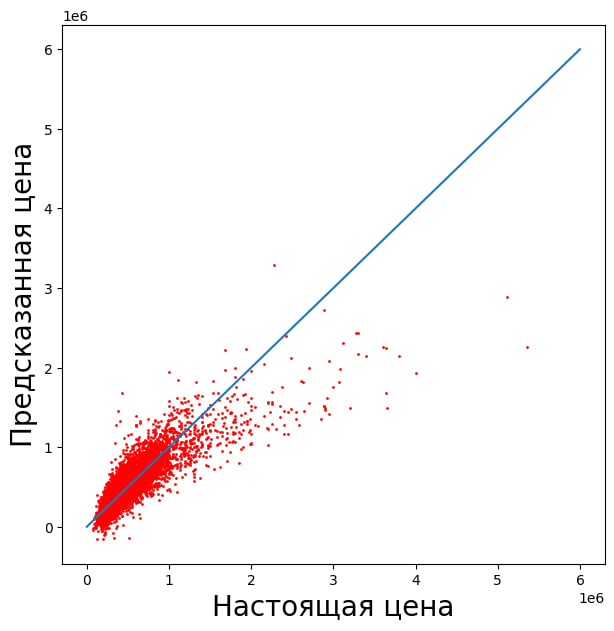
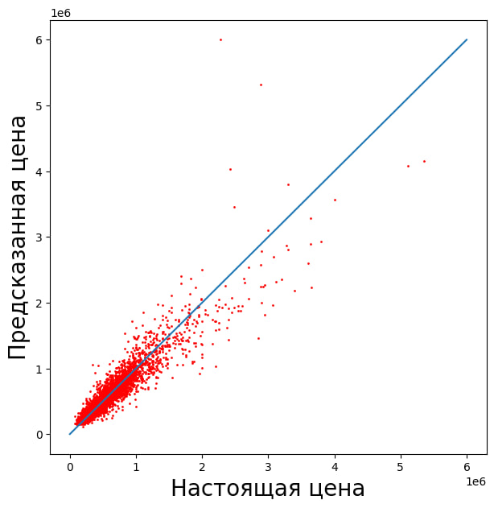

🏡 Прогнозирование стоимости недвижимости (House Price Prediction)
🏡 Прогнозирование стоимости недвижимости (House Price Prediction)
📌 Описание проекта
В рамках проекта была решена задача регрессии — предсказание стоимости недвижимости на основе характеристик объектов (площадь, количество комнат, геолокация и др.).
Целью работы было:
- обучить модели машинного обучения для предсказания цены
- сравнить качество различных алгоритмов
- исследовать влияние признаков
- подобрать гиперпараметры
- определить наиболее точную модель
📊 Данные
Использовался датасет с характеристиками объектов недвижимости.
Размер данных:
- 15 129 объектов
- 16 признаков (включая целевую переменную)
Целевая переменная:
Целевая.Цена
Примеры признаков:
- Жилая площадь
- Общая площадь
- Количество спален
- Количество ванных
- Год постройки
- Географические координаты (широта, долгота)
- Оценка риелтора
⚙️ Предобработка данных
На этапе анализа данных было установлено:
- пропущенные значения отсутствуют
- данные представлены числовыми признаками (int64, float64)
Целевая переменная была отделена от входных признаков:
training_values— ценаtraining_points— признаки
🤖 Использованные модели
В проекте были исследованы следующие модели:
1. Линейная регрессия
Базовая модель (baseline), позволяющая оценить линейную зависимость между признаками и целевой переменной.

2. Random Forest
Ансамблевый метод, основанный на решающих деревьях.

Проводились эксперименты:
- с полным набором признаков
- с удалением наименее значимых признаков
- с подбором гиперпараметров
3. Gradient Boosting
Ансамблевая модель, обучающая деревья последовательно с исправлением ошибок предыдущих моделей.
🔍 Анализ важности признаков
Была рассчитана важность признаков (feature importance).
Наименее значимыми оказались:
- Год реновации
- Количество этажей
- Спальни
- Состояние
- Площадь подвала
Проведены эксперименты:
- удаление 3 наименее значимых признаков
- удаление 5 наименее значимых признаков
📈 Метрики качества
Для оценки моделей использовались:
- MAE (Mean Absolute Error)
- MSE (Mean Squared Error)
- RMSE (Root Mean Squared Error)
Основной метрикой сравнения выбран RMSE, так как:
- измеряется в тех же единицах, что и цена
- сильнее штрафует большие ошибки
📊 Результаты
| Модель | MAE | RMSE |
|---|---|---|
| Gradient Boosting | 75 871 | 133 304 |
| Random Forest (drop 3) | 70 408 | 135 120 |
| Random Forest (buffed) | 70 441 | 135 909 |
| Random Forest (all) | 70 838 | 136 960 |
| Linear Regression | 126 852 | 201 883 |
🧠 Выводы
- Линейная регрессия показала наихудшее качество из-за неспособности моделировать нелинейные зависимости
- Random Forest значительно улучшил качество предсказания
- Удаление части слабых признаков позволило улучшить модель
- Слишком агрессивное удаление признаков ухудшает результат
- Подбор гиперпараметров Random Forest не всегда приводит к улучшению
🏆 Лучшая модель
Gradient Boosting показала наилучший результат:
- RMSE ≈ 133 304
Это объясняется тем, что модель:
- обучается последовательно
- исправляет ошибки предыдущих моделей
- лучше захватывает сложные зависимости
🚀 Интеграция модели в веб-сервис
Обученную модель можно интегрировать в веб-приложение (Flask / FastAPI / Django).
Основные шаги:
- Обучить модель в ноутбуке
- Сохранить модель (pickle / joblib)
- Создать API (например, FastAPI)
- Загрузить модель при запуске сервера
- Создать endpoint
/predict - Принимать входные данные пользователя
- Преобразовывать данные в нужный формат
- Вызывать
model.predict() - Возвращать результат
🛠️ Используемые технологии
- Python
- Pandas
- NumPy
- Scikit-learn
- Matplotlib
📎 Ссылки
- 📓 Ноутбук с решением: https://colab.research.google.com/drive/1saHDYmdRMorJKzAxilSathy6tC8B2IgB?usp=sharing
- 🌐 Описание: https://yannisbtw.github.io/labs/semester_2/Python/README5/ или https://shadowkreys.sourcecraft.site/shadowkreys-sourcecraft-site/labs/semester_2/Python/README5/
📌 Итог
В ходе проекта было показано, что выбор модели играет ключевую роль в задачах машинного обучения: разница между лучшей и худшей моделью составила более 68 000 по RMSE.